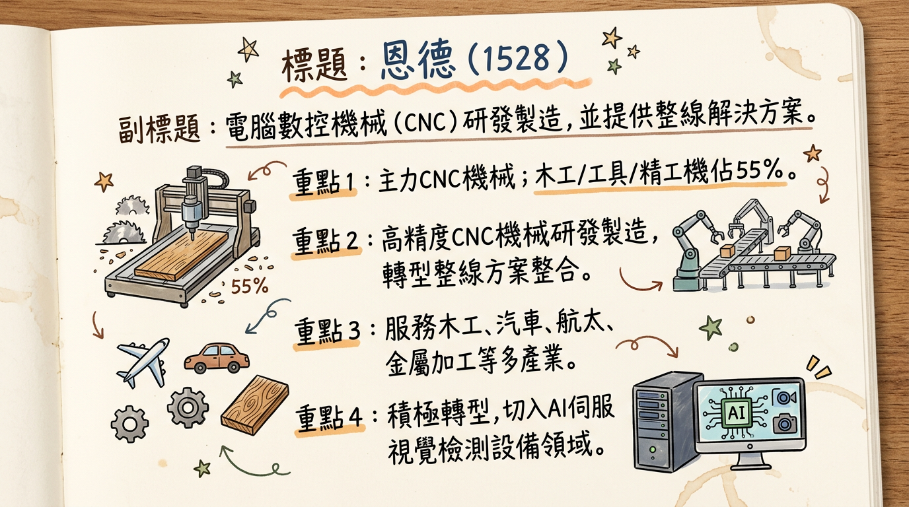
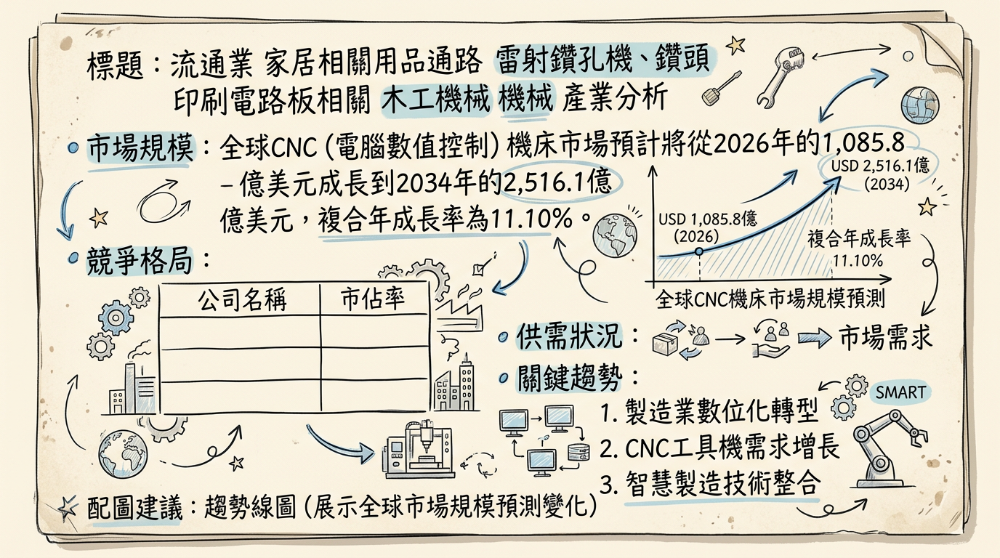
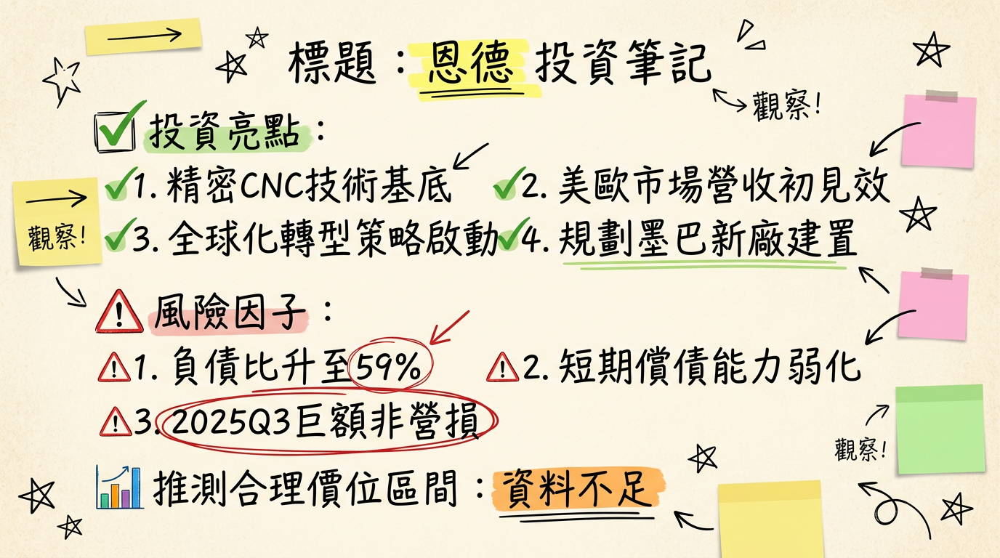

恩德科技（1528）正積極轉型為CNC設備整線方案供應商，並透過全球擴廠（墨西哥、巴西、澳洲）與切入AI伺服器視覺檢測設備，瞄準高階智慧製造商機。儘管2025年因新台幣匯率升值導致鉅額匯兌損失及初期投資費用而呈現年度虧損，但公司本業毛利率顯著改善，且2026年1月營收強勁年增44.26%，在手訂單能見度已達2026年第二至第三季。預期隨新產能逐步貢獻及產品組合優化，恩德營運有望於2026年逐步回升並力拚轉虧為盈。
恩德科技股份有限公司（1528-TW）成立於1972年7月，是專業的電腦數控機械（CNC機械）研發、製造與銷售商，並積極從單機銷售轉型為提供CNC設備整線方案的供應商，整合自動化、軟體與MES系統，以提升產品附加價值。
恩德的產品應用廣泛，涵蓋精密機械、電子機械、自動化整合及金屬機械。集團旗下主要品牌及其產品線包括：
恩德的服務產業領域廣泛，包括木工傢俱、汽車、軌道交通、航太、遊艇、先進材料及金屬加工等。近年來，公司也積極轉型，切入AI伺服器視覺檢測設備領域。
| 業務項目 | 佔營收比例 (2025年底) | 說明 |
|---|---|---|
| 木工機械、工具機、精工機 | 約 55% | 恩德核心機械製造業務。 |
| 板材、電子設備 | 各佔 20%+ | 包含Giben的板材加工設備及Anderson的PCB設備。 |
| 銷售區域 | 佔營收比例 (2025年前三季) | 說明 |
|---|---|---|
| 美洲 | 42% | 主要來自北美及拉丁美洲市場。 |
| 歐洲 | 37% | 涵蓋歐洲主要市場，包含德國子公司業務。 |
| 其他地區 | 21% | 主要為亞洲及其他新興市場。 |
恩德集團在全球擁有11個據點及7個生產基地，主要分佈於台灣、中國、德國、巴西和墨西哥。
恩德2026年1月營收表現亮眼，創近3個月新高，顯示營運動能有回升跡象。
| 月份 | 金額 (新台幣億元) | 月增率 MoM | 年增率 YoY | 備註 |
|---|---|---|---|---|
| 2026年1月 | 2.50 | +18.97% | +44.26% | 創近3個月新高。 |
| 2025年12月 | 2.11 | +4.80% | -25.82% | |
| 2025年11月 | 2.01 | N/A | -33.74% | |
| 2025年10月 | 未提供 | 未提供 | 未提供 | |
| 2025年9月 | 未提供 | 未提供 | 未提供 | |
| 2025年8月 | 2.15 | -2.27% | -21.28% | (參考數據，未在近6個月完整提供) |
| 季度 | 營收 (新台幣億元) | 毛利率 | 營業利益率 | EPS (新台幣元) | 備註 |
|---|---|---|---|---|---|
| 2025年第四季 | 未提供 | 未提供 | 未提供 | -0.35 (年化) | 2025全年EPS為-0.35元 (歸屬於母公司業主淨損為67,152仟元)。 |
| 2025年第三季 | 21.16 (前三季累計) | 30.73% | 2.56% | 0.08 | 本業營業利益轉正，但受鉅額匯損影響。 |
| 2025年第二季 | 未提供 | 32.99% | 5.21% | 未提供 | 毛利率與營業利益率表現較佳。 |
| 2025年第一季 | 未提供 | 28.59% | -3.27% | 未提供 | 營業利益率為負。 |
| 2024年第四季 | 未提供 | 29.33% | 4.32% | 未提供 | 營運表現穩健。 |
* 歸屬於母公司業主淨損為 新台幣67,152仟元，基本每股虧損(EPS)為 -0.35元。
* 2025年前三季合併營收21.16億元，本業營業利益雖轉正為4,200萬元，但受新台幣兌美元匯率升值導致的鉅額匯兌損失約1.32億元影響，稅後淨損1.04億元，前三季累積每股虧損（EPS）為-0.53元。公司曾期望2025年可轉虧為盈，但最終仍受業外因素影響。
恩德於2025年12月10日舉辦線上法人說明會，會中強調公司將積極推動全面的全球化擴張與轉型策略：
* 加速產品之跨洲行銷，特別是美洲及歐洲市場。
* 提高產品附加價值，專注於自動化整線服務與關鍵零組件（如自製主軸、線性馬達）的銷售。
* 透過併購及整併以增加全球通路、擴增產品線、取得關鍵新技術、品牌經營及組織整併。
目前未找到2025-2026年券商針對恩德科技（1528）發布的最新研究報告、具體目標價、EPS預估數字及評等調整資訊。
| 券商名稱 | 目標價 (新台幣元) | 評等 | 日期 | 備註 |
|---|---|---|---|---|
| 無資料 | 無資料 | 無 | 無 | 目前無公開券商報告。 |
恩德近四季的利潤率呈現波動，但本業毛利率有所提升。
| 季度 | 毛利率 | 營業利益率 | 稅後淨利率 |
|---|---|---|---|
| 2024Q4 | 29.33% | 4.32% | -4.79% |
| 2025Q1 | 28.59% | -3.27% | 1.83% |
| 2025Q2 | 32.99% | 5.21% | -17.11% |
| 2025Q3 | 30.73% | 2.56% | 2.13% |
根據2025年12月10日的法人說明會資料，恩德2025年前三季的營業毛利率提升至31%，為2019年以來最高水平，主要受惠於產品組合優化，轉向高毛利產品銷售。然而，稅後淨利率波動劇烈，尤其2025年Q2和Q3受到新台幣兌美元匯率升值導致的鉅額匯兌損失（2025年前三季累積約1.32億元）嚴重影響，儘管本業獲利能力改善，最終仍導致稅後淨損。
| 季度 | 存貨週轉天數 (天) | 應收帳款週轉天數 (天) |
|---|---|---|
| 2024Q4 | 169.36 | 72.63 |
| 2025Q1 | 265.67 | 109.74 |
| 2025Q2 | 199.53 | 70.29 |
| 2025Q3 | 173.99 | 68.86 |
* 2025Q1: 折舊 26,426仟元，攤銷 3,807仟元
* 2025Q2: 折舊 28,104仟元，攤銷 4,020仟元
* 2025Q3: 折舊 28,681仟元，攤銷 3,995仟元
近四個季度折舊攤銷金額相對穩定，預期隨著新廠陸續投產，未來折舊攤銷費用可能上升。
* 2025Q1: 58.67%
* 2025Q2: 59.92%
* 2025Q3: 59.42%
負債比率在2024年至2025年Q3呈現上升趨勢，達到近60%。根據法說會資料，這主要因應墨西哥與巴西的擴廠投資，以及台灣辦公室的新建。雖然顯示公司積極投資，但也導致負債結構承壓，短期償債能力弱化。
* 2025Q1: 自由現金流 -200,743仟元
* 2025Q2: 自由現金流 -180,389仟元
* 2025Q3: 自由現金流 21,034仟元
自由現金流量波動較大，在2025年Q1和Q2呈現負值，主要因應資本支出和營運資金需求。Q3轉為正值，顯示營運現金流有所改善。
| 日期 | 轉讓者 | 轉讓股數 | 轉讓方式 |
|---|---|---|---|
| 2026年1月30日 | 大股東事欣科技股份有限公司 | 2,800,000股 | 一般交易 |
| 2026年1月23日 | 大股東事欣科技股份有限公司 | 2,800,000股 | 一般交易 |
| 2024年10月25日 | 董事運永投資有限公司 | 2,300,000股 | 一般交易 |
| 2024年10月18日 | 董事運永投資有限公司 | 2,000,000股 | 一般交易 |
恩德科技作為電腦數控機械的研發、製造與銷售商，正處於全球製造業轉型升級的關鍵時期。
* 根據GII報告，全球CNC工具機市場預計從2025年的290.7億美元成長至2026年的303.8億美元（CAGR 4.5%），並在2030年達到372.7億美元（2026-2030年CAGR 5.2%）。
* 另有報告指出，全球CNC工具機市場在2025年為858.9億美元，預計到2026年達930億美元，並在2026-2035年間以超過9.2%的CAGR增長，到2035年將超過2,070.9億美元。
* 更廣泛的「CNC機床」市場預計從2026年的1,085.8億美元成長到2034年的2,516.1億美元，預測期間CAGR為11.10%。
* 中國數控機床市場方面，2023年規模達4090億元人民幣，預計2024年達4325億元人民幣，2019-2023年年均複合成長率為5.75%。其中，五軸聯動機床市場規模在2023年為112億元人民幣，預計2024年達120億元人民幣，年均複合成長率達15.52%。
目前CNC機械產業呈現結構性供需分化：
* 低階及中低階市場：普遍存在產能過剩、產品同質化嚴重、競爭激烈和價格戰，導致利潤空間持續受壓。
* 高階市場：對加工品質和精度要求更高的高階數控機床（特別是五軸聯動控制、高精度伺服系統、智能數控系統）仍處於供不應求的狀態，主要依賴少數國際巨頭供應，進口依存度高。
* 2025年全球製造業景氣呈現「溫和成長、結構分化」態勢，工具機產業預期於2025至2026年緩步回升，但成長重心集中於高階應用。
由於中低端市場的激烈競爭和價格戰，製造業企業的利潤率普遍偏低，尤其在機械與零部件市場成本壓力顯著，顯示產業平均毛利率受到一定程度的壓縮。
| 公司名稱 | 總部所在地 | 主要特點/市場地位 |
|---|---|---|
| Yamazaki Mazak Corporation (山崎馬扎克) | 日本 | 全球領先的數控工具機製造商，產品線廣泛。 |
| DMG Mori Co., Ltd. (德馬吉森精機) | 德國 | 高端數控機床主要供應商，注重研發、AI加工和增材製造。 |
| FANUC Corporation (發那科) | 日本 | 全球領先的數控系統、機器人製造商，數控系統市場份額第一。 |
| Haas Automation, Inc. (哈斯自動化) | 美國 | 美國領先的數控機床製造商。 |
| Makino (牧野) | 日本 | 高精度加工機床製造商。 |
| 比較項目 | 恩德科技 (1528) | 主要國際競爭對手 (如DMG Mori, Mazak, FANUC) |
|---|---|---|
| 技術 | 核心能力為高精度CNC機械研發製造。積極轉型整線方案，整合自動化、軟體與MES系統。旗下Focaseiki提供五軸加工中心機；Anderson深耕航太複合材料、PCB設備。 | 研發實力雄厚，引領AI驅動加工、增材製造、複合加工等先進技術。產品線全面，涵蓋標準機至高度客製化高階機型。核心零組件（高階數控系統、精密主軸）具技術壟斷優勢。 |
| 產能 | 全球11個據點、7個生產基地，主要在台灣、中國、德國、巴西、墨西哥。墨西哥與巴西新廠陸續投產。 | 通常具備更大生產規模和全球佈局，產能供應全球市場。 |
| 客戶 | 木工傢俱、汽車、軌道交通、航太（Boeing, Airbus）、遊艇、先進材料及金屬加工等。 | 服務全球廣泛的製造業客戶，包括頂級汽車、航太、能源、醫療等產業，參與全球供應鏈。 |
| 價格 | 台灣企業在中高階市場尋求競爭力，同時面對中低階市場的價格壓力。 | 提供多元價格區間產品，在高端市場享有品牌溢價能力。 |
目前缺乏2024-2026年恩德及其台灣同業（如東台精機4526、高鋒工業1560）的具體營收規模、毛利率、EPS最新對比數據。
產業概況：2025年台灣工具機產業復甦力道不均。以中低階出口機種為主的業者，仍承受中國需求下滑、關稅不確定性、匯率與價格競爭等壓力。具備半導體/PCB設備零組件能力、高速高精度加工或智慧整線解決方案的廠商，則展現相對穩健的成長韌性。恩德的轉型策略符合後者趨勢。* AI與智慧製造 (AI and Smart Manufacturing)：
* 趨勢：AI技術與CNC機械加工的深度融合，包括智能參數優化、預測性維護、實時數據分析、機台自我學習和加工策略優化等。
* 影響：提升生產效率（減少30-50%非計劃性停機）與品質、降低成本、實現高層次自動化、解決人才短缺。
* 高精度、多軸（尤其是五軸）聯動加工技術的普及：
* 趨勢：五軸數控機床憑藉高速度、高精度、智能化、複合加工及網絡通訊功能，加工複雜特徵或表面零件。
* 影響：擴大應用範圍（航太、汽車、模具、新能源、低空經濟），提升加工效率和品質，市場滲透率加速，有望取代非五軸機床成主流。
* 工業4.0與自動化整合 (Industry 4.0 and Automation Integration)：
* 趨勢：全球製造業向智能工廠、數位化、網絡化、柔性化升級，物聯網(IoT)、大數據、雲計算等技術與CNC系統深度整合。
* 影響：實現遠程監控、故障診斷和預測性維護；優化生產流程；滿足客製化和多樣化生產需求。
* 機會 (Opportunities)：
* 轉型整線方案供應商：符合AI與智慧製造趨勢，提升產品附加價值和競爭力。
* 航太與先進材料市場拓展：Anderson品牌在航太複合材料加工經驗，以及五軸加工技術，把握高端市場機會。
* 新興市場成長：透過全球佈局把握印度與東南亞等製造業擴產市場。
* AI伺服器視覺檢測設備：切入AI相關應用領域，帶來新成長動能。
* 威脅 (Threats)：
* 中低階市場競爭加劇：若恩德在中低階市場佔比較高，將持續承壓。
* 核心技術依賴：高階數控系統等核心零組件仍由國際巨頭壟斷，影響成本和供應鏈穩定性。
* 研發投入與人才競爭：AI與智慧製造技術快速演進，需要大量研發投入和高技術人才。
* 全球經濟不確定性：地緣政治風險、通膨、利率上升和中國經濟減速可能影響全球製造業投資意願。
* AI (人工智能)：恩德提供CNC設備整線方案，其軟體與MES系統整合是實現AI智能化的關鍵。轉投資銳德開發AI伺服器視覺檢測設備，直接連結AI題材。
* 電動車 (EV)：電動車產業對高精度加工需求（電池殼體、驅動系統、輕量化零件）持續增長，恩德在汽車產業的應用經驗使其受益。
* 航太 (Aerospace)：航太產業對大型、重型、高精度、多軸CNC機床需求強勁，恩德Anderson品牌在航太複合材料加工、Focaseiki五軸加工中心機扮演重要角色。
* HBM (高頻寬記憶體)：雖然未直接連結，但HBM是半導體關鍵技術，而半導體設備製造需要高精度機床。若恩德精密機械能應用於半導體設備或關鍵零組件加工，可間接連結。
* 自動化與機器人：CNC機械是工業自動化和智能工廠核心，恩德的整線解決方案轉型符合自動化整合趨勢。
* 巴西廠區已完成擴建並導入台灣技術移轉，開始貢獻營收。
* 澳洲子公司於2025年11月底開始營運並獲訂單出貨。
| 時間點 | 成長動能項目 | 具體進展/計畫 | 預計影響 |
|---|---|---|---|
| 2024年 | 巴西廠擴建 | 巴西廠區擴建第三、第四座廠房，並陸續量產。 | 強化在地製造能力，應對關稅壁壘，增加南美洲市場供應。 |
| 2025年7月 | 墨西哥廠正式投產 | 墨西哥Tijuana新廠正式投產木工機，並已銷往美國。 | 就近供應北美與中南美洲客戶，預估年產值新台幣4億至5億元。 |
| 2025年11月底 | 澳洲子公司開始營運 | 已接獲當地家飾傢具業的木工機訂單並出貨。 | 拓展大洋洲市場，分散地區營收。 |
| 2025年起 | AI伺服器視覺檢測設備 | 轉投資銳德公司開發出相關設備，切入AI伺服器應用領域。 | 增加新產品線與高成長性市場機會，為AI題材加持。 |
| 2025年下半年起 | 美洲市場營收貢獻 | 墨西哥新廠、巴西廠逐步貢獻營收。 | 顯著提升美洲市場營收佔比，分散市場風險。 |
| 2026年上半年 | 策略轉型投資調整期 | 新廠建置、產線移轉持續進行，初期可能影響獲利。 | 為長期成長奠定基礎，但短期需承擔投資成本。 |
| 2026年下半年之後 | 全球化擴張與智慧製造效益顯現 | 新產能、新技術與新市場逐步整合，智慧製造與高附加價值產品策略發揮效益。 | 營運有望步入正軌，獲利能力恢復並實現穩健成長。 |
| 2026年全年目標 | 業績力拚兩位數成長 | 管理層預期在上述成長動能驅動下，營運目標。 | 顯示公司對未來營收增長抱持積極態度。 |
| 未來 | 高附加價值自動化整線服務 | 專注於整線服務與自製主軸、線性馬達等關鍵零組件銷售。 | 提升毛利率與市場競爭力，符合產業升級趨勢。 |
恩德科技2026年展望審慎樂觀，管理層期望營運力拚雙位數成長並實現獲利。主要的成長動能來自於全球化擴張策略的逐步收穫以及產品線的轉型升級。
成長動能：總體而言，恩德2026年將是關鍵的轉型收穫期。若能有效執行全球擴張策略、成功整合新產能並持續優化產品組合，其營運有望逐步擺脫虧損困境，實現穩健成長。
恩德科技（1528）正處於一場深刻的轉型與全球化擴張階段，其積極佈局高附加價值產品線和新興市場的策略值得關注。
本報告由 AI 自動產生，資料來源為公開網路資訊，僅供參考，不構成投資建議。產生時間：2026-03-06 14:24


